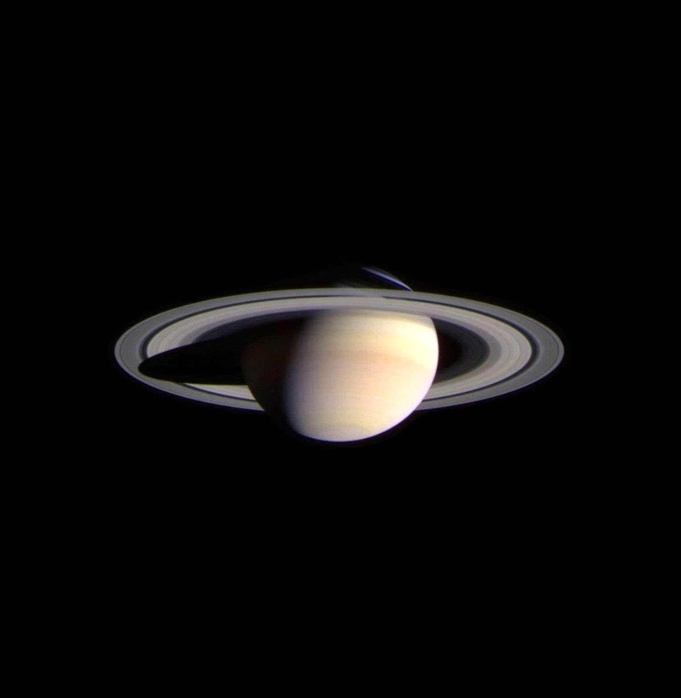

Saturno

|  |
|
Saturno es otro de los planetas más grandes del sistema solar, por lo que al igual que Júpiter, recibe su nombre de uno de los dioses más importantes de la mitología para griegos y romanos, quienes respectivamente se referían a él como Cronos y Saturno, y en sendas mitologías fueron padres de Zeus y Júpiter. Cronos y Saturno eran, de hecho, los dioses del tiempo y la agricultura. Saturno es el planeta que a lo largo del año se puede observar durante más tiempo en el firmamento, por lo que la elección de ambas culturas para nombrar a este gigante gaseoso no es una casualidad. Saturno es el sexto planeta en distancia al sol del sistema solar. También se trata del segundo planeta más grande (9 planetas Tierra en fila cabrían a lo largo de la línea de su ecuador) y el otro de los gigantes gaseosos de nuestro vecindario cósmico, aunque al igual que sucede con Júpiter, los científicos creen que podría albergar una núcleo sólido en su interior. Al igual que Júpiter, Saturno tiene 53 lunas conocidas con 30 lunas adicionales a la espera de la confirmación de su descubrimiento, es decir, un total de 83 lunas, algunas tan interesantes como Titán o Encélado. |